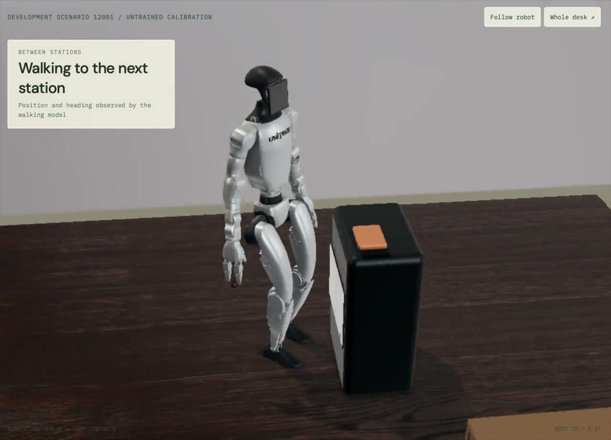

Mochi is a tiny humanoid with four chores. It climbs a stack of books, turns off an alarm clock, closes a drawer and a laptop, and spins a globe to a target.
What I care about is what happens after an attempt goes wrong. If Mochi falls, approaches something badly, or pulls its arm back awkwardly, that should change what we look into next and how we train the next model.
past.dev is where we keep those findings so every stage of the research can use them. Tinker updates the model that picks walking strategies, contact profiles, and arm recovery. MuJoCo, the physics simulator, gives us the measurements we use to judge those picks.
Does the model make better decisions after training—and can we trace each training choice back to the evidence behind it?
THE RESEARCH LOOP
A fall should leave
more than a recording.
When Mochi falls off a book, you get a lot of data. Joint positions, foot contacts, and body orientation tell you what happened. They don’t tell you which part of the movement failed, why, or what to try next. Someone has to work that out.
Exact trajectories and numbers go in artifact storage. past.dev holds what the person running the next experiment actually needs: the failure we saw, our best guess at why, the sources behind it, and what happened when we tested it. Every record has an author, a timestamp, an audience, and a source ID. A hypothesis is never stored as if it were a conclusion.
One failure: Mochi started stepping down before its foot had cleared the edge of a book. The experiment history recorded the falls, then the development tests of staged clearance and shorter foot placements. That went into a shared observation, along with what we’d learned about approaching the clock and pulling the arm back.
The research stage recalled it before searching for methods. The design stage recalled the sourced hypothesis before choosing how to split training. Inspect the memory code.
That handoff changed something real. The design stage picked a split that gave arm recovery more supervision than the balanced option. Both splits still trained walking and all four manipulation tasks. The decision record lists the source records it used, so we can see exactly what fed into it.
How a memory handoff stays traceable
A successful write does not mean the finding is ready to read back. Before a dependent read, we wait for ingestion to finish. Pending ingestion IDs are journaled so an interruption does not lose track of the handoff.
On recall, we check that returned source IDs match the record requested, then retrieve the exact payload from the experiment journal. If the required source is missing, the handoff stops rather than substituting an unrelated result.
Shared findings and private review notes use different audiences. A synthetic private record was tested from outside its audience; the audit recorded the expected denial. Ingestion and journaling code.
THE PART THAT LEARNS
Train the decisions.
Keep the comparison fixed.
Tinker trains Qwen3.5-4B with LoRA, updating a small set of the model’s parameters. The model reads structured observations and picks from a fixed set of controller options: how Mochi walks, how its hand approaches and touches an object, and how its arm pulls back afterward.
During checkpoint comparison, the gait network, balance controller, and manipulation primitives do not change. Tinker updates the decision model on top of them. Its choices run through MuJoCo’s actuators; the simulator measures whether Mochi gets to the station, makes valid contact, and finishes safely.
Training examples come from physically comparing the available actions. A completed training run means gradients and optimizer updates, saved checkpoints, and the model running in new rollouts. A nicer replay or a rewritten prompt does not count as a trained checkpoint. Training code · Tinker API.
One campaign ran 32 new optimizer updates. Development evaluation selected the checkpoint after update 1, not the last one.
WATCH WHAT CHANGED
The same world.
A better next attempt.
We tested on six held-out simulation scenarios. The starting model finished the whole sequence in three. The selected model finished all six within the smoothness limits we’d set. A solid fixed controller finished five.
Full-sequence completion within the specified smoothness limits. Six scenarios, one small simulation study. No hardware validation. Read the assessment.
Parent vs. selected model

Replay the recorded physics.
Six final-test pairs, plus a development scenario with intermediate checkpoints.The component checks narrowed down what changed. When we intervened on walking alone, the starting model fell and the selected model made a different walking choice and finished. In the manipulation and recovery checks, both models made the same profile choices. We cannot say this study demonstrated learned improvements in manipulation or recovery.
We wrote that caveat to memory too. The final evaluation went into past.dev, was recalled for review, and was followed by a qualified conclusion. The research stage then recalled that conclusion. The next experiment gets both the result and the narrower explanation of what actually changed.
THE NEXT EXPERIMENT
Fewer steps.
The same standard of evidence.
The next training campaign builds that controller into every comparison and tries to cut unnecessary steps. We’ll count footstep attempts, make sure balance and task completion hold up, and compare the parent model with intermediate checkpoints on the same scenarios.
We’re aiming for 20% fewer steps. That is a target, not a result claimed here.
past.dev keeps the evidence and its caveats. Tinker lets us update the decisions we want to test. With both, we can follow one finding from the training choice it led to, through a physical experiment, to a revised conclusion—and the next attempt starts from there.
OPEN THE NOTEBOOK
The evidence behind the story.
- Completed-training assessmentDevelopment selection, held-out results, and component checks.
- Training executionReceipts for the optimizer campaign.
- Evaluation executionReceipts for the frozen-checkpoint assessment.
- Training replay manifestScenario IDs, checkpoints, numerical results, and recording references.
- Navigation comparisonBefore/after heading metrics and route durations.
- Replay provenanceArchived source commit and hashes of the unmodified recordings.
- Scene attribution · Robot license · Desk assets · Three.js license
This is a state-observation simulation study. Browser replays interpolate recorded physics samples; the development film is a separate screen recording. Displayed simulation time excludes remote inference waits. The clips illustrate particular runs; the assessment counts failures across the cohort.